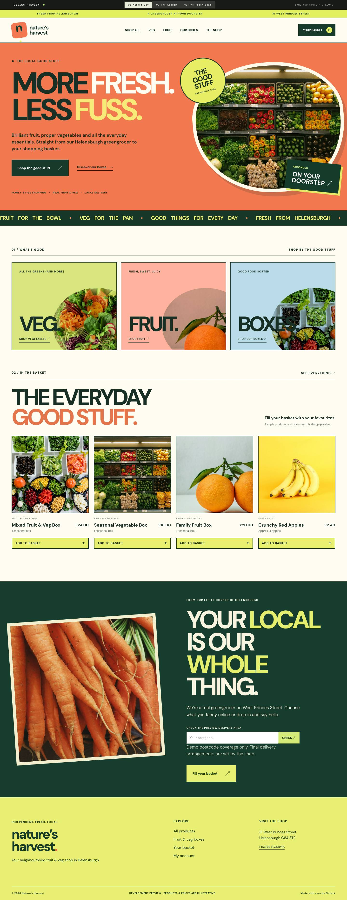
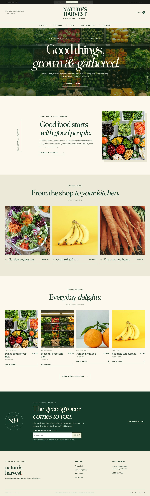
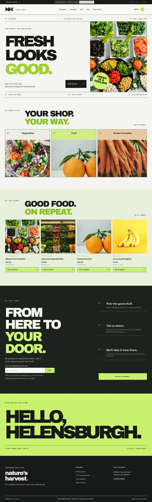

Explore three distinct website concepts for the independent Helensburgh fruit and veg shop. Each design is responsive and includes a sample catalogue.

Bold, colourful and full of personality.

Traditional, refined and full of warmth.

Contemporary, minimal and crisp.
Design-only preview. The produce prices and photographs are illustrative. Orders and payments are disabled; the separate WooCommerce build remains private.